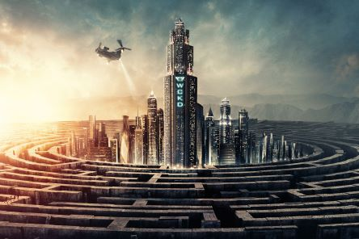

Le Bloc et le Labyrinthe
C'est un espace central au cœur du Labyrinthe, où les Blocards vivent. Le Bloc ressemble à un campement, avec des habitations et des champs. Il est entouré de grands murs qui forment l'entrée du Labyrinthe.
- La Ferme
- Le Gnouf
- Le Jardin
- L'Abattoir
- Le Terminus
- La Boîte
- La salle des cartes
Le Labyrinthe se trouve autour du Bloc, pour empêcher ces derniers d'en sortir.
Chaque nuit, les murs du Labyrinthe changent de place et modifie les chemins en créant de nouveaux passages ou en bloquant d'autres. Cela complique la cartographie et rend difficile l'identification d'une sortie permanente.
Le Labyrinthe est immense et composé de huit sections qui se connectent de manière imprévisible.
Le Labyrinthe représente différentes dangers :
Les pièges :
Des mécanismes mortels disséminés dans le Labyrinthe, tels que des fosses ou des mécanismes écrasants, ajoutent un risque supplémentaire pour les Coureurs.
Les passages sans issue :
Certains chemins mènent à des impasses, piégeant les Blocards sans possibilité de fuite si ils sont poursuivi par des Griffeurs.
^
La Terre Brulée
La Terre Brûlée est un désert aride et chaotique, composé de vastes étendues de sable, de zones rocheuses, et de ruines. On y retrouve les débris d’une civilisation passée : des immeubles, des routes et des infrastructures détruits.
Les éruptions solaires, qui ont gravement endommagé l’atmosphère et la surface terrestre, ont transformé cette région en un environnement inhabitable.
Les tempêtes électriques fréquentes et les températures extrêmes rendent la Terre Brûlée encore plus dangereuse. Le manque d’eau et de nourriture ajoute une pression constante sur ceux qui tentent de traverser la région.
Dans la Terre Brûlée, les Fondus vivent en meutes dans les ruines de villes et attaquent les intrus. Certains sont encore conscients de leur état, mais sombrent progressivement dans la folie.
Traverser la Terre Brûlée est un test imposé par WICKED aux survivants du Labyrinthe. C’est une étape pour mesurer leur endurance physique et mentale face à des conditions extrêmes.
^
L'Hôtel des Fondus
L’Hôtel des Fondus est une structure abandonnée après la catastrophe mondiale, autrefois luxueuse, elle est maintenant délabrée.
L’Hôtel est devenu un refuge pour les Fondus, les humains infectés par la Braise, qui se cachent dans les couloirs et différentes pièces.
Ces Fondus sont particulièrement agressifs, agissant presque comme des prédateurs..
Certains malades montrent des signes avancés du virus, avec des déformations physiques et un comportement violent.
L’Hôtel est dangereux aussi à cause de son état, avec des planchers qui s’effondrent, des escaliers instables, et des pièces en partie détruites.
^
Le QG Wicked

Le QG de Wicked est un bâtiment massif et sécurisé, comprenant de nombreux laboratoires. Le bâtiment possède une atmosphère froide et clinique.
L’installation est protégée par des systèmes de sécurité avancés, notamment des soldats armés et des dispositifs électroniques.
Situé dans une zone relativement intacte par rapport à la Terre Brûlée , le QG est conçu pour être imprenable.
C’est ici que WICKED mène ses expérimentations scientifiques pour développer un remède au virus.
Les laboratoires sont utilisés pour étudier les immunisés comme
Thomas,
Newt ou
Minho, en analysant leur cerveau et leur sang.
Les expériences comprennent des tests cruels et inhumains sur des sujets captifs.
Toutes les décisions majeures de WICKED, notamment les plans concernant les expériences sur les Labyrinthes et les tests dans la Terre Brûlée, sont prises ici.
Le personnel, comme Ava Paige, la directrice de WICKED, opère depuis ce bâtiment.
Lors de l’attaque finale menée par Thomas et ses alliés, le QG est partiellement détruit. Cet événement marque la fin de l’autorité de WICKED et le début d’un nouveau chapitre pour les survivants qui trouvent ensuite refuge dans une zone isolé.
^